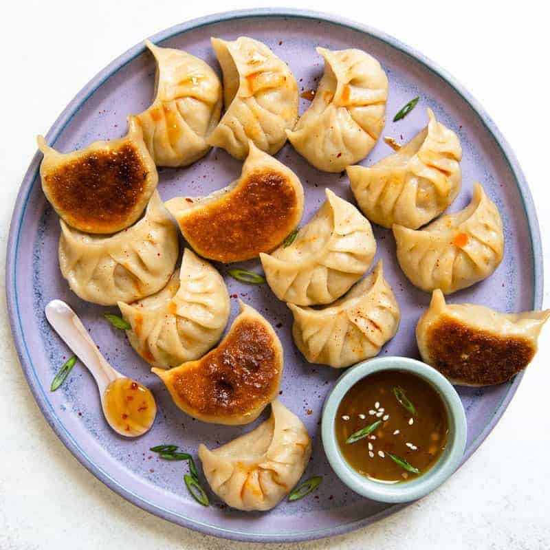

Potstickers Recipe

Description
These tasty treats make a perfect appetizer or you can serve them as a main dish. For a main dish count on about 15 dumplings per person. Serve with hoisin sauce, hot Chinese-style mustard and toasted sesame seeds.
Ingredients
- 100 (3.5 inch square) wonton wrappers
- 2 pounds ground pork
- 1 tablespoon minced fresh ginger root
- 4 cloves garlic, minced
- 2 tablespoons thinly sliced green onion
- 4 tablespoons soy sauce
- 3 tablespoons sesame oil
- 1 egg, beaten
- 5 cups finely shredded Chinese cabbage
Steps
- In a large bowl, combine the pork, ginger, garlic, green onion, soy sauce, sesame oil, egg, and cabbage. Stir until well mixed.
- Place 1 heaping teaspoon of pork filling onto each wonton skin. Moisten edges with water and fold edges over to form a triangle shape. Roll edges slightly to seal in filling. Set dumplings aside on a ligthly floured surface until ready to cook.
- To cook: Steam dumplings in a covered bamboo or metal steamer for about 15 to 20 minutes. Serve immediately.